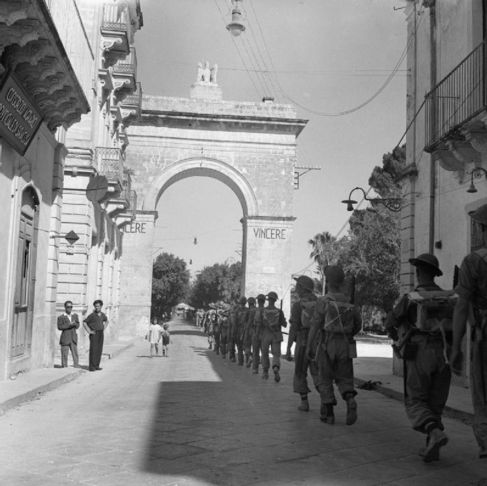
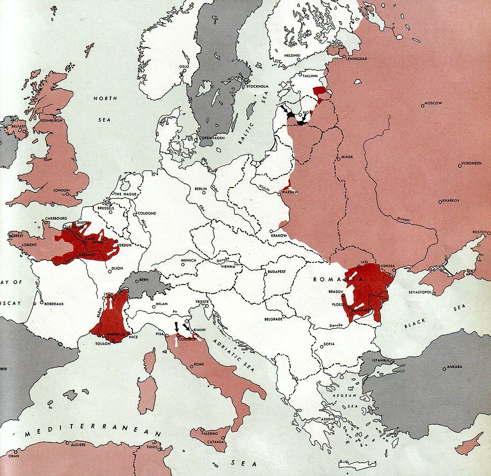

Az olasz hadjárat(Második világháború)
A második világháborús olasz hadjárat volt a szövetséges hadműveletek neve Olaszországban és környékén, 1943 -tól az európai háború végéig. A Szövetséges Erők Központja (AFHQ) operatív felelősséggel tartozott a földközi -tengeri színház összes szövetséges szárazföldi erőiért, és 1943 júliusában tervezte és irányította Szicília invázióját, majd röviddel ezután szeptemberben az olasz szárazföld invázióját és az olasz hadjáratot. talajt a német fegyveres erők olaszországi megadásáig 1945 májusában.
Becslések szerint 1943 szeptembere és 1945 áprilisa között mintegy 60 000–70 000 szövetséges és 38 805–150 660 német katona halt meg Olaszországban. A hadjárat során a szövetségesek összesen 320 000 áldozatot tettek ki. ez a szám (kivéve a végső megadásban résztvevőket) meghaladta a 330 000 -et. A fasiszta Olaszország az összeomlását megelőzően mintegy 200 000 áldozatot szenvedett, főként hadifoglyokat ejtettek a Szicília szövetségesek inváziójában, köztük több mint 40 000 halottat vagy eltűntet. Rajtuk kívül több mint 150 000 olasz civil halt meg, valamint 35 828 antifasiszta partizán és az Olasz Szociális Köztársaság mintegy 35 000 katonája.
Nyugaton egyetlen más hadjárat sem kerül többe, mint Olaszország az elveszett életek és a sebesülések tekintetében, amelyeket mindkét oldal gyalogos haderői értek, a téli vonal, az Anzio tengerparti és a gótikus vonal erős pontjai körüli keserves kis harcok során. A hadjárat akkor ért véget, amikor a C hadseregcsoport 1945. május 2 -án, egy héttel a hivatalos német átadási eszköz előtt, feltétel nélkül megadta magát a szövetségeseknek. A hadművelet során a független olasz államok, San Marino és a Vatikán is károkat szenvedett, mindkettőt olasz terület veszi körül.
Stratégiai háttér
Még az észak-afrikai kampány 1943. májusi győzelme előtt nézeteltérés alakult ki a szövetségesek között a tengely legyőzésének legjobb stratégiájáról. stratégia. Még ha nagy hadsereggel, de nagyobb tengeri erővel is rendelkezünk, a hagyományos brit válasz a kontinentális ellenséggel szemben az volt, hogy harcoljon koalíció részeként, és végezzen apró perifériás műveleteket, amelyek célja az ellenség fokozatos gyengítése. Az Egyesült Államok a nagyobb amerikai hadsereggel a közvetlenebb módszert részesítette előnyben a német hadsereg fő ereje elleni harcban Északnyugat -Európában. Egy ilyen kampány elindításának képessége attól függött, hogy először nyerte meg az atlanti csatát.
A stratégiai nézeteltérés heves volt, az amerikai szolgálati vezetők a lehető leghamarabb Franciaország inváziója mellett érveltek, míg brit kollégáik a Földközi -tengeren folytatott műveletekre összpontosító politikát támogattak. Még néhány latin -amerikai ország is nyomást gyakorolt Spanyolország inváziójának lefolytatására, amely Francisco Franco alatt barátságos volt a tengely nemzeteihez, bár nem vett részt a háborúban. Az amerikai stáb úgy vélte, hogy az európai háború befejezéséhez a lehető leghamarabb teljes körű franciaországi invázióra van szükség, és nem szabad olyan műveleteket végrehajtani, amelyek késleltethetik ezt az erőfeszítést. A britek azzal érveltek, hogy a Földközi-tengeren kétéltű partraszállásra kiképzett csapatok nagy száma miatt korlátozott létszámú invázió lehetséges és hasznos.
Végül az Egyesült Államok és a brit politikai vezetés kompromisszumra jutott, amelyben mindketten elkötelezték haderőjük nagy részét 1944 elején Franciaország elleni invázióra, de viszonylag kis léptékű olasz kampányt is indítanak. Hozzájáruló tényező volt Franklin D. Roosevelt azon törekvése, hogy az amerikai csapatokat 1943 -ban aktívvá tegye az európai színházban, és vonzódása az ötlethez, hogy Olaszországot ki kell zárni a háborúból. Azt remélték, hogy egy invázió kiütheti Olaszországot a konfliktusból, vagy legalábbis növeli a rá nehezedő nyomást és gyengíti azt. Olaszország megszüntetése lehetővé tenné a szövetséges haditengerészeti erők, elsősorban a Királyi Haditengerészet uralását a Földközi -tengeren, biztosítva ezzel a kommunikációs vonalakat Egyiptommal, a Távol -Kelettel, a Közel -Kelettel és Indiával. A Balkánon és Franciaországban a megszállásról és a part menti védelmi feladatokról szóló olasz hadosztályokat visszavonják Olaszország védelmében, míg a németeknek csapatokat kell áthelyezniük a keleti frontról, hogy megvédjék Olaszországot és Franciaország teljes déli partvidékét, ezzel segítve a szovjeteket.
A hadjárat
Szicília inváziója
A szövetségesek együttes inváziója Szicíliába 1943. július 10 -én kezdődött, kétéltű és légi úton történő leszállással a Gela -öbölben. Az érintett szárazföldi erők az Egyesült Államok hetedik hadserege, George S. Patton altábornagy és a brit nyolcadik hadsereg voltak, Bernard Montgomery tábornok vezetésével. Az eredeti terv a britek északi irányú erőteljes előretörését tervezte a keleti part mentén Messinába, és az amerikaiak támogató szerepet töltöttek be a bal szárnyuk mentén. Amikor a nyolcadik hadsereget a makacs védelem feltartotta az Etna -hegytől délre fekvő, zord dombokon, Patton szélesítette az amerikai szerepét, északnyugat felé széles előrenyomulással Palermo felé, majd közvetlenül észak felé, hogy elvágja az északi part menti utat. Ezt követte az Etnától északra fekvő, keleti irányú előrenyomulás Messina felé, amelyet az északi parton kétéltű partraszállások támogattak, amelyek Patton csapatait Messinába hajtották röviddel a nyolcadik hadsereg első egységei előtt. A védekező német és olasz erők nem tudták megakadályozni, hogy a szövetségesek elfoglalják a szigetet, de sikerült csapatuk nagy részét a szárazföldre evakuálniuk, az utolsó távozás pedig 1943. augusztus 17 -én. A szövetséges erők nyertek tapasztalat az ellentétes kétéltű műveletekben, koalíciós hadviselésben és nagy légi cseppekben.

A kontinentális Olaszország megszállása
A brit nyolcadik hadsereg haderői, még mindig Montgomery alatt, 1943. szeptember 3 -án partra szálltak Olaszország lábujjában, a Baytown hadműveletben, azon a napon, amikor az olasz kormány fegyverszünetet kötött a szövetségesekkel. A fegyverszünetet szeptember 8. -án nyilvánosan két adás jelentette be, először Eisenhower tábornok, majd Badoglio marsall kiáltványa. Bár a német erők olasz segítség nélkül készültek a védekezésre, a nyolcadik hadsereggel szembeni hadosztályukból csak kettőt, egyet pedig Salernóban nem kötöttek le az olasz királyi hadsereg leszereléséről.
Szeptember 9 -én az amerikai ötödik hadsereg erői, Mark W. Clark altábornagy irányítása alatt, kevés ellenállásra számítva, a súlyos német ellenállás ellen szálltak le Salernóban az Avalanche hadműveletben; emellett a brit erők Tarantóban szálltak partra a szinte ellenállás nélküli Slapstick hadműveletben. Remény volt arra, hogy az olasz kormány megadásával a németek észak felé vonulnak vissza, mivel akkoriban Adolf Hitler meg volt győződve arról, hogy Dél -Olaszország stratégiailag nem fontos. Ennek azonban nem kellett lennie; bár egy ideig a nyolcadik hadsereg viszonylag könnyen haladhatott felfelé a keleti parton, elfoglalva Bari kikötőjét és a Foggia környéki fontos repülőtereket. Annak ellenére, hogy az északi tartalékok egyike sem állt a német 10. hadsereg rendelkezésére, ennek ellenére közel került a salernói partraszállás visszaszorításához, főként Clark óvatos parancsának köszönhetően. A szövetségesek fő nyugati erőfeszítései kezdetben a nápolyi kikötőre összpontosultak: ezt a várost azért választották ki, mert ez volt a legészakibb kikötő, ahol a Szicíliából repülő vadászrepülőgépek fedezhették a levegőt.
A szövetségesek előrehaladtával egyre nehezebb tereppel találkoztak: az Apennin -hegység gerincet képez az olasz félsziget mentén, kissé keletre eltolódva. Abruzzo leghegyesebb területein a félsziget szélességének több mint a fele olyan hegyeket és csúcsokat tartalmaz, amelyek 3000 láb (910 m) felett vannak, és amelyek viszonylag könnyen védhetők; és a gerinc sarkantyúi és újbóli belépői szembesítették a szövetségeseket a sorozatos gerincekkel és folyókkal az előrelépésükön. A folyók hirtelen és váratlan áradásoknak voltak kitéve, amelyek folyamatosan meghiúsították a szövetséges parancsnokok terveit.
A szövetségesek Rómába menetele
1943 októberének elején Hitlert a dél -olaszországi hadseregcsoport parancsnoka, Albert Kesselring tábornagy meggyőzte arról, hogy Olaszország védelmét a lehető legtávolabb kell végezni Németországtól. Ez a legtöbbet hozná ki Közép -Olaszország természetes védekező földrajzából, miközben megtagadná a szövetségesektől, hogy könnyen sorra kapják el a repülőtereket; mindegyik egyre közelebb van Németországhoz. Hitler meg volt győződve arról is, hogy Dél -Olaszország megadása ugródeszkát biztosít a szövetségesek számára a Balkán inváziójához, létfontosságú olaj-, bauxit- és rézkészleteivel.
Kesselring egész Olaszország parancsnokságát kapta, és azonnal elrendelte egy sor védelmi vonal előkészítését Olaszországban, Rómától délre. Két vonallal, a Volturnóval és a Barbara -val késleltették a szövetségesek előrenyomulását, hogy időt nyerjenek a legfélelmetesebb védelmi pozíciók előkészítésére, ami a téli vonalat képezte - a Gustav vonal és két kapcsolódó védelmi vonal közös neve nyugaton az Apennin -hegység, a Bernhardt és a Hitler vonal (ez utóbbit 1944. május 23 -án Senger -vonalnak nevezték el)
A téli vonal 1943 végén komoly akadályt jelentett a szövetségesek számára, megállítva az ötödik hadsereg előrenyomulását Olaszország nyugati oldalán. Bár a Gustav -vonal behatolt a nyolcadik hadsereg Adriai frontjára, és Ortonát elfogták, a hóviharok, a hóesés és a decemberi zéró láthatatlanság miatt az előretörés megállt. A szövetségesek középpontjában ezután a nyugati front fordult, ahol a Liri -völgyön keresztüli támadást tartották a legnagyobb esélynek az áttörésre az olasz főváros felé. A Winston Churchill brit miniszterelnök által támogatott Shingle -hadművelet során az Anzio -ban történő leszállások célja a német Gustav -vonal védelmének destabilizálása volt, de a németek védelmének levágására irányuló korai belvágás nem történt meg, köszönhetően a határozatlanságnak. az amerikai parancsnok (John P. Lucas vezérőrnagy) és az Anzio -erők a tengerparton palackoztak. Lucast Lucian Truscott vezérőrnagy váltotta fel.
Négy nagy támadás kellett 1944 januárja és májusa között, mire a vonalat végül az ötödik és nyolcadik hadsereg (beleértve a brit, amerikai, francia, lengyel és kanadai hadtestet) együttes támadása törte meg egy húsz mérföldes front mentén Monte Cassino és a nyugati tengerpart. Ezzel párhuzamosan Mark Clark amerikai tábornokot megparancsolták, hogy törjön ki az Anzioban álló helyzetből, és készpénzt vegyen be a lehetőségre, hogy levágja és megsemmisítse a német 10. hadsereg nagy részét, amely visszavonul a köztük és a kanadaiak közötti Gustav-vonalról. Ez a lehetőség azonban a siker küszöbén elveszett, amikor Clark nem engedelmeskedett parancsainak, és elküldte amerikai erőit, hogy lépjenek be az üres Rómába. Rómát a német hadsereg nyitott városnak nyilvánította, így nem találtak ellenállást.
Az amerikai erők 1944. június 4 -én birtokba vették Rómát. A német tizedik hadsereg megengedte, hogy elmeneküljön, és a következő hetekben felelősek voltak a szövetségesek áldozatainak megkétszerezéséért a következő hónapokban. Clarkot hősként üdvözölték az Egyesült Államokban. A kanadaiakat megállás nélkül küldték át a városon másnap hajnali 3 órakor.

A szövetségesek Észak-olaszországba menetele
Róma elfoglalása és a szövetségesek júniusi Normandia -inváziója után 1944 nyarán az Egyesült Államok VI. Hadtestét és a Francia Expedíciós Testületet (CEF), amelyek együttesen hét hadosztályt értek el, kivonultak Olaszországból, hogy részt vegyenek a Dragon -hadműveletben. , kódneve a szövetségesek dél -franciaországi inváziójához. Ezen tapasztalt egységek hirtelen eltávolítását az olasz frontról csak részben kompenzálta három hadosztály, a brazil 1. gyaloghadosztály, az USA 92. gyaloghadosztályának 1944 második felében és az USA 10. hegyosztályának fokozatos érkezése. 1945 januárjában.
Az 1944. júniustól augusztusig tartó időszakban a szövetségesek Rómán túlra jutottak, elfoglalták Firenzét és bezártak a gótikus vonalon. Ez az utolsó nagy védelmi vonal a parttól Pisától északra, mintegy 48 kilométerre, a Firenze és Bologna közötti szaggatott Apennin -hegység lánca mentén húzódott az Adriai -tenger partjáig, Riminitől délre. Annak érdekében, hogy lerövidítsék a szövetségesek kommunikációs vonalait az észak-olaszországi előrenyomuláshoz, a lengyel II. Hadtest az anconai kikötő felé haladt, és egy hónapig tartó csata után július 18-án sikerült elfoglalnia.
Az Olive hadművelet során, amely augusztus 25 -én kezdődött, a gótikus vonal védelmét mind az ötödik, mind a nyolcadik hadsereg frontján behatolták; de nem történt döntő áttörés. Churchill, a brit miniszterelnök abban reménykedett, hogy 1944 végén egy jelentős előrelépés megnyitja az utat a szövetséges hadsereg számára, hogy északkelet felé haladjon a "Ljubljana -szakadék" (Velence és Bécs közötti terület, a mai Szlovénia) révén Bécs és Magyarország felé. hogy megakadályozzák a Vörös Hadsereget Kelet -Európába való előretörésében. Churchill javaslatát erőteljesen ellenezték az amerikai vezérkari főnökök, akik nem teljesen értették annak fontosságát a térségben a háború utáni brit érdekek szempontjából, és nem gondolták, hogy összhangban van a szövetségesek általános háborús prioritásaival.
Októberben Sir Richard McCreery altábornagy, Sir Oliver Leese altábornagy lett a nyolcadik hadsereg parancsnoka. Decemberben Mark Clark altábornagyot, az ötödik hadsereg parancsnokát nevezték ki a 15. hadseregcsoport parancsnokságára, ezáltal Sir Harold Alexander brit tábornok lett az összes szövetséges szárazföldi csapat parancsnoka Olaszországban, Alexander pedig Sir Henry Wilson tábornok lett. Szövetséges főparancsnok a Mediterrán Színházban. Clarkot az ötödik hadsereg parancsnoksága után Lucian K. Truscott altábornagy, ifj. Követte. 1944–45 telén és tavaszán kiterjedt partizántevékenység zajlott Észak -Olaszországban. Mivel ebben az időszakban két olasz kormány működött (egy a háború mindkét oldalán), a harc a polgárháború néhány jellemzőjét öltötte.
A rossz téli időjárás, amely lehetetlenné tette a páncélozott manőverezést és a mindent elsöprő légi fölény kiaknázását, valamint az őszi harcok során a csapatainak elszenvedett hatalmas veszteségeket, egyes brit csapatok Görögországba való áthelyezésének szükségességét. mivel a brit ötödik gyaloghadosztály és az I. kanadai hadtest Északnyugat -Európába való visszavonásának szükségessége miatt) a szövetségesek 1945 elején nem volt praktikusak offenzívájuk folytatására. Ehelyett a szövetségesek elfogadták a "támadó védekezés" stratégiáját, miközben felkészültek az utolsó támadásra. amikor tavasszal jobb időjárási és talajviszonyok érkeztek.
1945. február végén-március elején az Encore hadművelet során látta, hogy az amerikai IV. Hadtest elemei (1. brazil hadosztály és az újonnan érkezett amerikai 10. hegyi hadosztály) előre harcolnak az Appenninek aknamezőin, hogy frontjukat összehangolják az amerikai II. Hadtest hadseregével jobb. Kiszorították a német védőket a Monte Castello, valamint a szomszédos Monte Belvedere és Castelnuovo parancsnoki csúcsáról, megfosztva őket a tüzérségi állásoktól, amelyek a Bologna megközelítését irányító őszi ősszel történt szövetséges kísérlet óta irányították a várost. Eközben az egyéb közlekedési infrastruktúrákban bekövetkezett károk arra kényszerítették a tengely erőit, hogy tengeri, csatorna- és folyami útvonalakat használjanak az utánpótláshoz, ami a Bowler hadművelethez vezetett a hajózás ellen a velencei kikötőben 1945. március 21-én.
A szövetségesek utolsó offenzívája 1945. április 9 -én hatalmas légi és tüzérségi bombázásokkal kezdődött. A szövetségesek 1945. áprilisában 1 500 000 férfit és nőt vetettek be Olaszországba. A tengely április 7 -én 599 514 katonával rendelkezett, ebből 439 224 német és 160 180 olasz. Április 18 -ig a keleti nyolcadik hadsereg erői áttörték az Argenta -rést, és egy páncélzatot küldtek előre egy köröző lépésben, hogy találkozzanak a Közép -Olaszország Apenninjeiből előretörő amerikai IV. Hadtesttel, és csapdába ejtsék Bologna fennmaradó védőit. Április 21 -én Bolognába belépett a 3. Kárpát hadosztály, az olasz Friuli csoport (mindkettő a nyolcadik hadseregből) és az amerikai 34. gyaloghadosztály (az ötödik hadseregből). Az USA 10. hegyi hadosztálya, amely megkerülte Bolognát, április 22 -én érte el a Po folyót; a 8. indiai gyaloghadosztály, a nyolcadik hadsereg frontján, április 23 -án érte el a folyót.
Április 25-ig az olasz partizánok felszabadító bizottsága általános felkelést hirdetett, és ugyanazon a napon, miután átlépte a Po-t a jobb oldalon, a nyolcadik hadsereg erői észak-északkelet felé Velence és Trieszt felé haladtak. Az amerikai ötödik hadsereg frontján a hadosztályok észak felé Ausztria felé és északnyugatra Milánóba hajtottak. Az ötödik hadsereg bal szárnyán az Egyesült Államok 92. gyaloghadosztálya ("Buffalo Soldiers Division") ment a part mentén Genováig. A jobb oldali brazil hadosztály gyors előrenyomulása Torino felé meglepte a német -olasz Liguria hadsereget, és összeomlott.
1945 áprilisának végén a német hadsereg C csoportja, amely minden fronton visszavonult, és elvesztette harci erejének nagy részét, nem maradt más lehetősége, mint megadni magát. Heinrich von Vietinghoff tábornok, aki Albert után átvette a C hadseregcsoport parancsnokságát 1945 márciusában Kesselringet áthelyezték a Nyugati Front (OB West) főparancsnokává, április 29-én aláírta az olaszországi német hadsereg nevében a feladási okiratot, és hivatalosan 1945. május 2-án véget vetett az ellenségeskedésnek. .

English summary (angol összefoglaló)
The Italian campaign of World War II, also called the Liberation of Italy, consisted of Allied and Axis operations in and around Italy, from 1943 to 1945. The Joint Allied Forces Headquarters (AFHQ) was operationally responsible for all Allied land forces in the Mediterranean theatre and it planned and led the invasion of Sicily in July 1943, followed in September by the invasion of the Italian mainland and the campaign in Italy until the surrender of the German Armed Forces in Italy in May 1945.
It is estimated that between September 1943 and April 1945, 60,000–70,000 Allied and 38,805–150,660 German soldiers died in Italy. The number of Allied casualties was about 330,000 and the German figure (excluding those involved in the final surrender) was over 330,000. Fascist Italy, prior to its collapse, suffered about 200,000 casualties, mostly POWs taken in the invasion of Sicily, including more than 40,000 killed or missing. Over 150,000 Italian civilians died, as did 35,828 anti-fascist partisans and some 35,000 troops of the Italian Social Republic. On the Western Front of World War II, Italy was the most costly campaign in terms of casualties suffered by infantry forces of both sides, during bitter small-scale fighting around strongpoints at the Winter Line, the Anzio beachhead and the Gothic Line.
The invasion of Sicily in July 1943 led to the collapse of the Fascist Italian regime and the fall of Mussolini, who was deposed and arrested by order of King Victor Emmanuel III on 25 July. The new government signed an armistice with the Allies on 8 September 1943. However, German forces soon took control of northern and central Italy; Mussolini, who was rescued by German paratroopers, established a collaborationist puppet state, the Italian Social Republic (RSI), to administer the German-occupied territory. The Germans, sometimes with Italian fascists, also committed several atrocities against civilians and non-fascist troops. The Italian Co-Belligerent Army was created to fight against the RSI and its German allies, alongside the large Italian resistance movement, while other Italian troops continued to fight alongside the Germans in the National Republican Army; this period is known as the Italian Civil War. In April 1945, Mussolini was captured by the Italian resistance and summarily executed by firing squad. The campaign ended when Army Group C surrendered unconditionally to the Allies on May 2, 1945, one week before the formal German Instrument of Surrender. The independent states of San Marino and the Vatican, both surrounded by Italian territory, also suffered damage during the conflict.